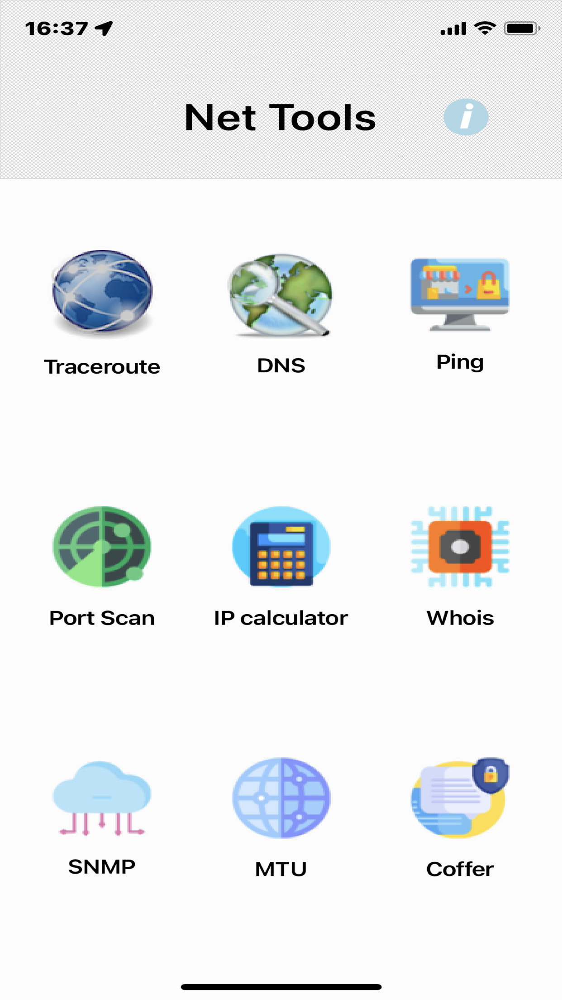

Net Tools
多平台的网络检测工具
1、支持 iOS、MacOS 系统；
2、提供 ping、路由跟踪、DNS查询、端口扫描、whois、SNMP、MTU、IP计算等功能；
3、支持 IPv4 和 IPv6，以及 TCP、UDP、ICMP；
4、免费，无广告，无需任何隐私权限。
[ 功能说明 ]

1、支持 iOS、MacOS 系统；
2、提供 ping、路由跟踪、DNS查询、端口扫描、whois、SNMP、MTU、IP计算等功能；
3、支持 IPv4 和 IPv6，以及 TCP、UDP、ICMP；
4、免费，无广告，无需任何隐私权限。
| 操作系统 | 应用市场下载 | 直接下载 | |
|---|---|---|---|
| iOS | 在 App Store 搜索：nettools. 正在App Store审核中 |
||
| MacOS | |||